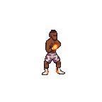

Fire · manual head correction
Only original frames 2 and 3 have localized head/neck pixel edits. Their existing wind-up bodies, arms, feet and flames are unchanged. The right-facing head comes from the original release pose; the crouch is retained. No artwork generations. Jab, Heavy and live combat are untouched.
This is a review, not an approved live animation. A head-only correction cannot repair any remaining torso/arm continuity issue. Compare the full motion below before approving it.
Saved original

Localized correction

Corrected frames in order
Unchanged Jab / Heavy review · Unchanged live game